프로젝트 한눈에 보기
 01 — HACKATHON · 2026.07 – 08
BELIEF
정보를 퍼뜨려 NPC의 믿음을 움직이는 전략 시뮬레이션 — 콘텐츠 기획 · PM
GAME ANALYSIS
02 — GAME ANALYSIS · 2026.08
좀비고등학교
12년차 라이브 게임을 MDA로 분석하고 신규 콘텐츠 2건 제안 — 개인 작업
01 — HACKATHON · 2026.07 – 08
BELIEF
정보를 퍼뜨려 NPC의 믿음을 움직이는 전략 시뮬레이션 — 콘텐츠 기획 · PM
GAME ANALYSIS
02 — GAME ANALYSIS · 2026.08
좀비고등학교
12년차 라이브 게임을 MDA로 분석하고 신규 콘텐츠 2건 제안 — 개인 작업
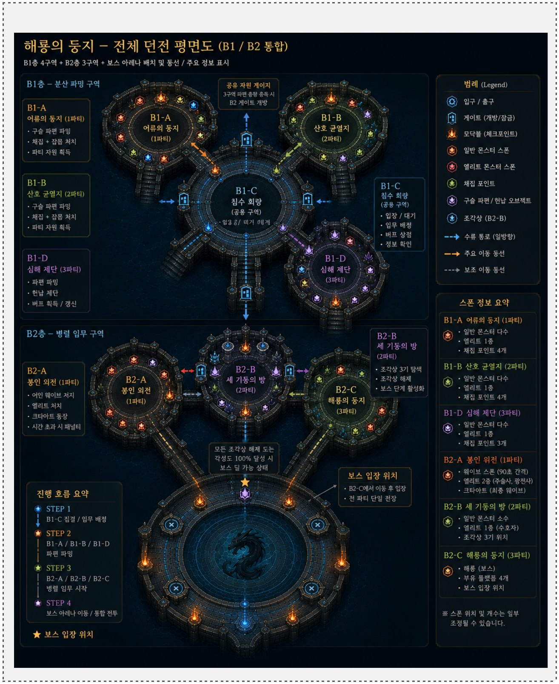
03 — LEVEL DESIGN · 2026.06 해룡의 둥지 12인 3파티가 서로의 난이도에 영향을 주는 엔드콘텐츠 — 레벨 디자인 · 보스 · 기믹 통합 설계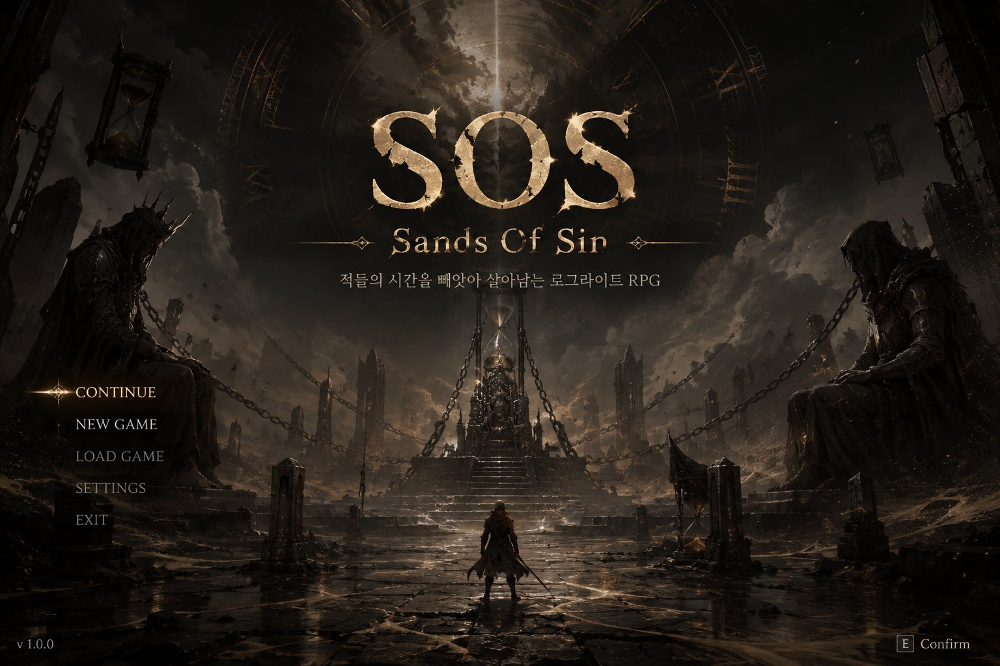
04 — TEAM PROJECT · 2026.06 SOS: Sands Of Sin 경쟁작 가격 분포와 손익분기점으로 설계한 마케팅 계획서 — 가격 · 광고 전략 단독 담당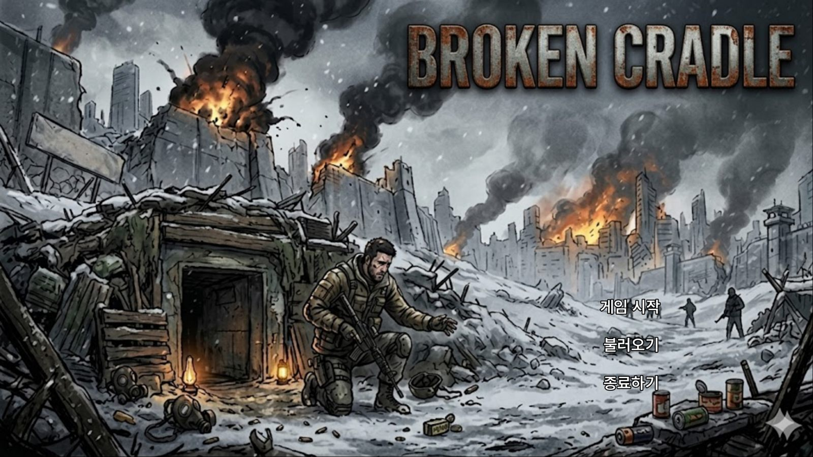
05 — TEAM PROJECT · 2026.04 부서진 요람 7일간의 생존 딜레마를 그린 심리 노벨 어드벤처 — 시나리오 · 대사 427줄 · 레벨 디자인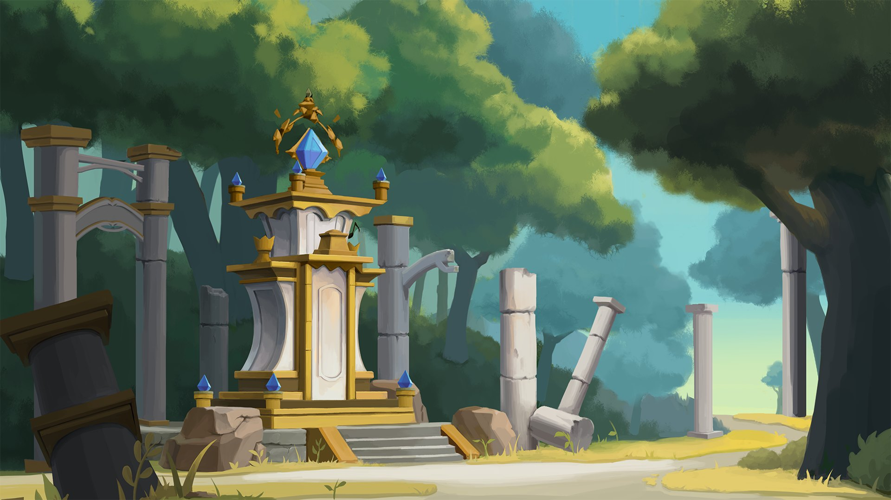
06 — GRADUATION PROJECT · 2025.10 엘브네아 Unity 3D 액션 어드벤처 졸업작품 — 전투 · AI · UI 시스템 C# 구현BELIEF
“사람은 행동이 아니라, 믿음으로 움직인다.” 플레이어는 NPC를 직접 조종하지 않는다. 대신 정보를 적절한 장소에 퍼뜨리거나 특정 인물에게 전달해, NPC가 성격·관계·기존 믿음을 바탕으로 스스로 판단하고 행동하도록 유도하는 전략 시뮬레이션입니다.
콘텐츠 기획 · 프로젝트 관리(PM)
3인 팀에서 전체 게임 기획(시나리오 · 시스템 · 콘텐츠)을 설계하고, 이를 팀원이 바로 작업할 수 있는 단위로 쪼개 전달하는 것이 제 핵심 역할이었습니다. 해커톤 기간 안에 플레이어블 빌드를 완성하는 것이 목표였기에, ‘좋은 기획’보다 ‘팀이 실제로 따라갈 수 있는 구조’를 만드는 데 무게를 뒀습니다.
- 정보 시스템을 두 갈래로 단순화 — 소문처럼 퍼지는 확산형(SPREAD)과 특정 인물이 받아야 하는 전달형(DELIVER). 카드 형태만 보면 사용법이 정해지도록 설계해 플레이어의 학습 비용을 줄였습니다.
- 콘텐츠 직접 설계 — 스테이지 4개, NPC 19명 전원 프로필(성격 · 관계 · 기존 믿음), 정보 카드 30장(10개 카테고리 × 3장), 신뢰 단계 5단계 표준, 피날레 메커니즘
- 미션 클리어 조건을 OR 로직으로 설계해 플레이어가 한 가지 공략에만 묶이지 않도록 했습니다.
- 직군별 기획서 분리 전달 — 아트에는 스테이지 · NPC · 카드 콘텐츠 기획서를, 개발에는 턴 진행 · 카드 판정 · 신뢰 상태 전이 로직을 담은 시스템 기획서를 전달하고, 구현 중 발견된 이슈를 기획으로 피드백받아 반영했습니다.
- PM 업무 — 노션 기획 허브(7개 DB) 구축, SFX 소싱, 팀 일정 조율
- 테스트에서 드러난 문제를 설명이 아니라 구조로 해결 — 학습 비용을 줄이려 카드를 두 갈래로 단순화했는데도 테스트에서는 여전히 막혔습니다. 튜토리얼 문구를 늘리는 방향 대신, 첫 스테이지 자체를 배우는 구간으로 다시 설계하고 정보를 UI에 상시 노출시켰습니다. 규칙을 단순하게 만드는 것만으로는 부족하고, 그 규칙을 언제 어떻게 보여줄지까지가 기획이라는 걸 확인한 지점입니다.


좀비고등학교 Analysis & Proposal
4~5년간 플레이해온 유저 관점에서 12년째 서비스 중인 라이브 게임을 MDA(Mechanics–Dynamics–Aesthetics) 프레임워크로 분해하고, 분석에서 도출한 문제를 실제로 푸는 신규 콘텐츠 2건을 기획서로 제안한 개인 작업입니다.
게임 분석 · 콘텐츠 제안 — 개인 작업 전체
분석에서 끝내지 않고 제안까지 이어지도록 구성했습니다. 규칙에서 출발해 플레이 양상을 거쳐 재미에 도달하는 MDA 순서로 게임을 분해한 뒤, 그 과정에서 가장 약한 축으로 진단된 지점을 겨냥해 콘텐츠 기획서를 썼습니다. ‘무엇이 문제인가’와 ‘그래서 무엇을 만들 것인가’를 같은 근거 위에 올려두는 것이 목표였습니다.
- 재미의 축을 5개로 나눠 완성도 차이를 진단 — Expression·Fellowship은 광장이라는 공간에서 이미 강하게 발현되는 반면, 성장 시스템이 담당해야 할 Challenge는 ‘전투력 자체가 크게 오르지 않는’ 규칙 때문에 반복 파밍이 도전이 아닌 노동으로 체감될 여지가 있다고 봤습니다.
- 스킨이 전투력과 분리된 규칙이 만드는 문화를 추적 — 파워가 아닌 정체성 경쟁이 되고, 그 결과 광장에서 코디를 전시·구경하는 활동이 자생합니다. 원래 미니게임 공간으로도 설계된 광장이 전시 활동에 편중되는 현상까지 같은 규칙으로 설명했습니다.
- 리부트 시스템 심화 분석 — 의도는 타당, 보상 설계가 문제 구작 노후화를 막고 장기 행동 동기를 확보하려는 시즌제·초기화 구조 자체는 합리적이라고 판단했습니다. 다만 보상을 성장 재화 한 축에만 의존하게 설계해 기존 유저의 참여 유인이 사라지고 매칭 풀이 무너진 것으로 봤고, 좋은 의도도 보상이 한 축에 몰리면 실패한다는 것을 사례로 정리했습니다.
- 제안 ① 단독 소탕전 — 파티 매칭 장벽과 엔드콘텐츠 편중을 한 번에 파티 없이 혼자 도전하는 랭킹형 솔로 레이드입니다. 웨이브마다 공격·생존·유틸 중 버프 1개를 고르는 로그라이트 구조로 매번 다른 빌드가 나오게 하고, 난이도 3단계와 주간 갱신으로 반복 도전 동기를 만들었습니다.
- 제안 ② 광장 낚시터 & 로비 꾸미기 — 피로도를 비전투 콘텐츠로 분산 1회 10~15초의 저압박 루프로 코디·사진 활동 사이사이 즐길 거리를 채우고, 2021년 종료된 ‘커스텀룸’의 후속으로 ‘내 공간을 꾸미는’ 자기표현 축을 하나 더 만들어 반복되는 스킨 판매에 대한 피로를 우회하도록 설계했습니다.
- 제안서에 밸런싱·리스크·도입 순서까지 포함 — 신규 콘텐츠가 기존 파티 레이드의 대체재가 되지 않도록 보상 재화를 분리하고, 실패해도 부분 보상으로 이탈을 막고, 클리어 타임 랭킹인 만큼 어뷰징 방지 로직을 설계 단계에서 함께 고려했습니다. 확률형 요소는 관련 법령에 따른 사전 고지를 전제로 했고, 낚시 → 로비 꾸미기 → BM 연동의 3단계 도입 순서를 제안해 1단계만으로도 반응 검증이 가능하도록 했습니다.
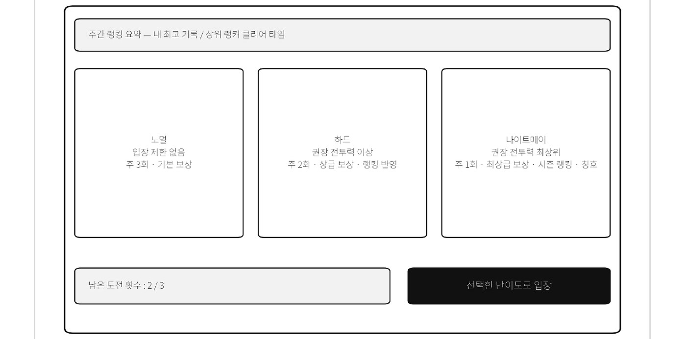
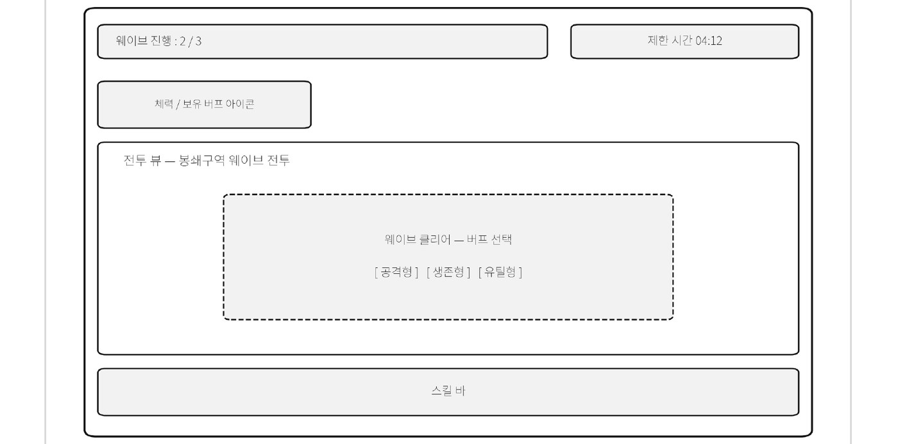
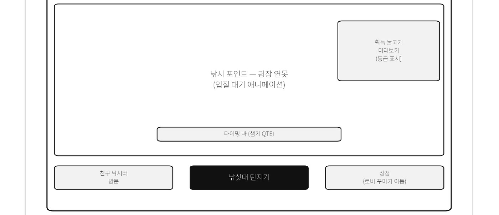
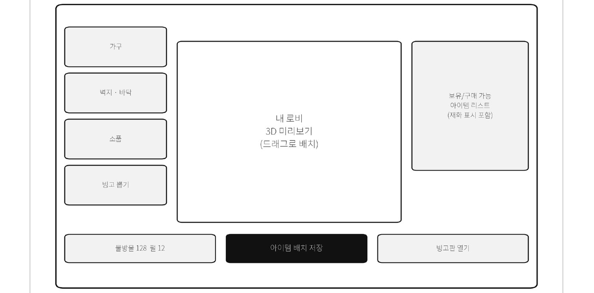
| 난이도 | 입장 조건 | 도전 횟수 | 보상 |
|---|---|---|---|
| 노멀 | 레벨 제한 없음 | 주 3회 | 기본 보상 |
| 하드 | 권장 전투력 이상 | 주 2회 | 상급 보상 + 주간 랭킹 반영 |
| 나이트메어 | 권장 전투력 최상위 | 주 1회 | 최상급 보상 + 시즌 랭킹 반영 + 한정 칭호 |
해룡의 둥지 마비노기 모바일
3파티 12인이 같은 던전에 동시 입장해, 각자 다른 임무를 수행하면서 그 결과가 실시간으로 다른 파티의 난이도에 반영되는 엔드콘텐츠를 제안했습니다. 기존 어비스의 지역효과·방기믹·보스기믹 3계층 문법을 계승하되, ‘파티 간 상호 영향’이라는 4번째 계층을 얹는 것이 설계의 핵심입니다.
레벨 디자인 · 보스 · 기믹 · 보상 통합 설계
세계관부터 보상까지 한 문서로 묶은 24쪽 통합 기획서를 혼자 작성했습니다. 여러 영역이 강하게 맞물리는 12인 연계형 콘텐츠라 분리 문서보다 통합 문서가 설계 정합성을 검증하기 유리하다고 판단했고, 실제로 ‘공간 배치 → 보스 패턴 → 보상’이 서로를 제약하도록 설계했습니다.
- 파티의 성패가 서로에게 전이되는 구조 — 1파티가 어인 저지에 실패하면 어인이 해룡에 흡수돼 2파티가 해제한 조각상이 다시 활성화되고, 2파티의 해제 속도가 곧 3파티의 딜 가능 시점이 됩니다. 세 파티를 독립된 방에 넣지 않고 하나의 인과로 묶은 것이 이 기획의 실험 지점입니다.
- 속성 개방 = 딜 개방 — 보스는 조각상 3기(마법 무효 · 물리 무효 · 수호)에 보호받아 사실상 무적으로 시작합니다. 어떤 기둥을 먼저 푸느냐가 곧 어떤 속성으로 딜할 수 있느냐를 정하므로, 2파티의 해제 순서가 3파티의 전투 전략을 규정합니다.
- 공간이 기믹을 강제하도록 배치 — 창살 시야선으로 다른 구역 전황을 보이게 해 연계 긴장을 만들고, 일방향 수류 통로로 복귀를 느리게 해 시간 관리를 강제했습니다. 부유 플랫폼은 시간이 지날수록 침수돼 회피 공간이 점점 좁아집니다.
- 8개 Zone을 긴장 곡선에 맞춰 배치 — 1층은 저긴장 분산 파밍, 2층 전반은 3구역이 서로 영향을 학습하는 중긴장, 후반 각성 구간은 패턴 로테이션과 타임어택이 겹치는 고긴장으로 설계했습니다. Blender로 그레이박스를 만들어 동선과 스폰 위치를 검증했습니다.
- 난이도는 높되 불합리하지 않게 — 모든 위협 패턴에 차징 모션과 바닥 장판으로 사전 고지를 넣고, 입문 난이도에서는 연계 페널티를 절반으로 낮춰 구조 학습용으로 열었습니다. 각성도 100% 도달 시 조각상 해제 여부와 무관하게 다음 페이즈로 강제 전환되는 안전장치도 뒀습니다.
- 자원을 파티가 아닌 던전 단위로 — 1층에서 모은 구슬 파편을 12인 공유 자원으로 누적시키고, 헌납량에 따라 전체 파티에 수중 버프를 겁니다. 무버프로 보스에 진입하면 받는 피해가 늘어 1·2층 진행이 보스전의 전제 조건이 되도록 묶었습니다.
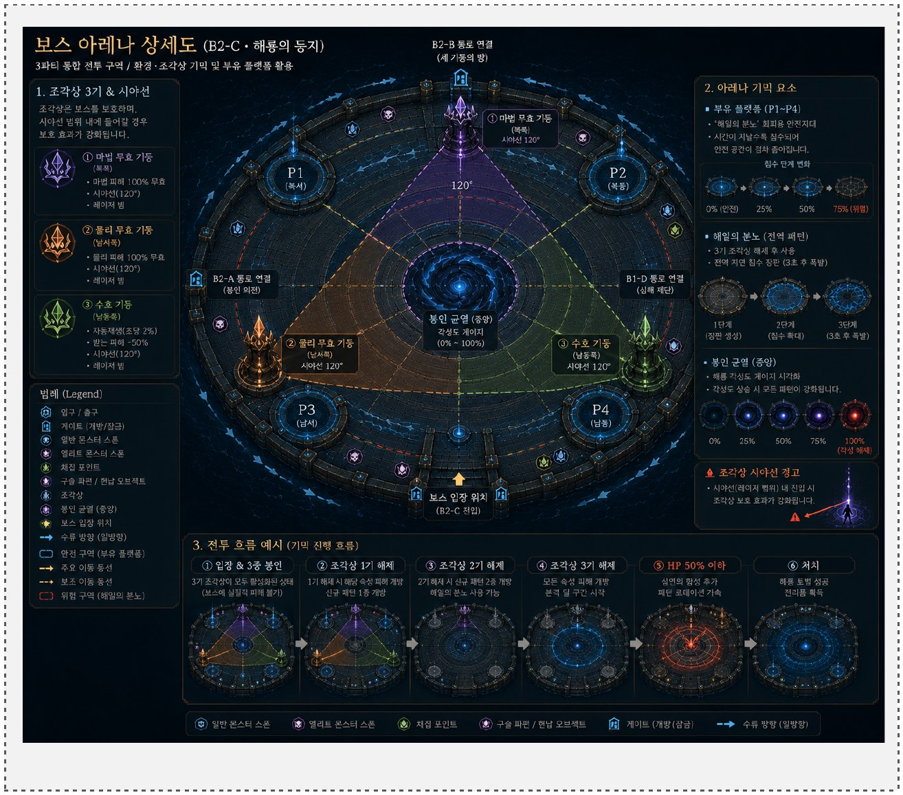
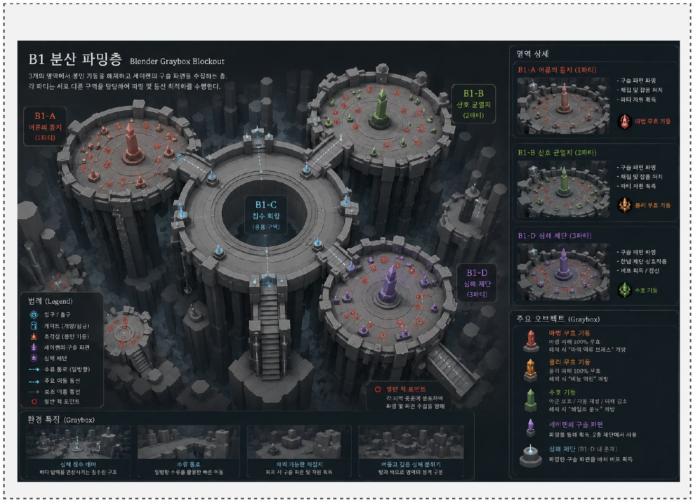
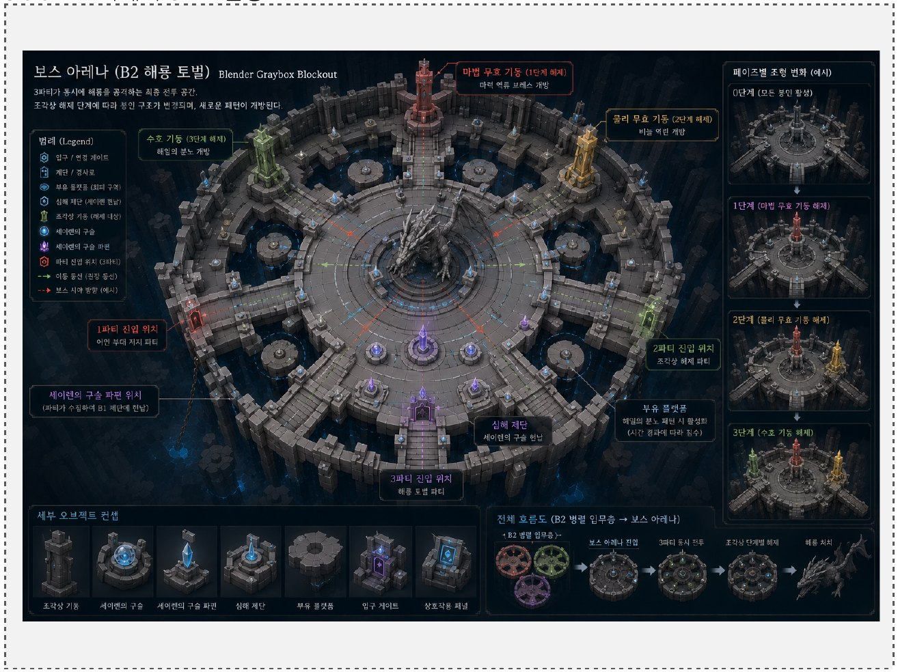
| 파티 | 핵심 임무 | 다른 파티에 미치는 영향 |
|---|---|---|
| 1파티 | 어인 무리 저지 · 크타아트 토벌 | 저지 실패 시 조각상 재활성화 + 해룡 각성도 상승 |
| 2파티 | 조각상 3기 탐색 · 해제 | 해제 속도 = 3파티의 딜 가능 시점과 패턴 개방 속도 |
| 3파티 | 해룡 토벌 | 페이즈 전환 시 전역 견제기 발동 — 타 구역에도 장판 |
SOS: Sands Of Sin
“시간이 곧 돈이고, 적을 죽여야만 살아남는 사후세계.” 신규 IP 인디 게임이라는 전제 아래, 경쟁작 가격 분포와 손익분기점을 근거로 가격 전략을, 한정된 예산을 전제로 PR 중심 광고 전략을 설계했습니다.
가격 전략 · 광고 전략 — 개인 단독 담당
6인 팀 프로젝트에서 마케팅 · BM 파트를 혼자 맡아 계획서 전체를 설계하고 작성했습니다. 포지셔닝 문장(“긴장감 있는 자원 관리 + 퍼즐적 전투 + 사후세계 세계관”)을 먼저 확정하고, 이후의 모든 가격 · 광고 판단을 그 문장에서 역산하는 방식으로 짰습니다.
- 가격은 감이 아니라 계산으로 — 경쟁작 5종(Hades · Dead Cells · Slay the Spire · Darkest Dungeon · Rogue: Genesia)의 가격 분포에서 준거 가격과 품질 의심 하한선을 잡고, 신규 IP임을 감안해 $17.99~$19.99 구간으로 결론지었습니다.
- 손익분기점 직접 산출 — 9인 12개월 인건비에 간접비 · 기회비용을 반영해 실질 개발비를 잡고, 고정비와 Steam 수수료 30%를 제외한 공헌 마진 기준으로 출시가별 분기 판매량을 계산했습니다.
- DLC · 에디션 구조 설계 — 기본판을 인위적으로 잘라 파는 캡티브 프로덕트를 지양하고, OST · 아트북을 기본판 구매자에게 의미 있는 보완재로 구성했습니다.
- 세일 스케줄링(스키밍) — 출시 1개월 정가 유지 → 3개월 20% → 6개월 30% → 1년 40~50%. 비정기 임의 할인은 준거 가격을 무너뜨리므로 공식 세일 기간으로 한정했습니다.
- 제약을 먼저 인정한 광고 전략 — 퍼블리셔도 예산도 없는 인디 팀이라는 조건에서 유료 광고보다 PR이 비용 대비 효과가 높다고 판단해 PR을 1순위로 재배치했습니다.
- 측정 가능한 목표 설정 — 인지도 → 정보 제공 → 호의적 태도 → 선호도 → 구매 전환의 5단계로 광고 목표를 나누고, ‘출시 3개월 전 위시리스트 5,000개’처럼 검증 가능한 수치로 잡았습니다.
| 출시가 시나리오 | 손익분기 판매량 | 전략적 판단 |
|---|---|---|
| $14.99 | 약 56,500부 | 가격 저항 최소, 분기점 판매량 가장 높음 |
| $17.99 (권장) | 약 47,000부 | 가격 대비 할인 인식, 현실적 목표 |
| $19.99 | 약 42,400부 | Hades급 포지셔닝, 품질 신뢰도 우선 필요 |
부서진 요람 BROKEN CRADLE
“자원을 얻으면 인간성을 잃고, 사람을 도우면 자원을 잃는다.” 도시국가를 무너뜨린 장본인 ‘고스트’가 자기가 만든 폐허에서 7일을 버티는 이야기다. 플레이어는 매일 식량을 찾아 나서고, 그때마다 도움을 청하는 생존자와 마주친다. 도우면 식량이 줄고, 약탈하면 정신력이 깎이며, 죽이면 되돌릴 수 없는 업보가 쌓인다. 나는 이 딜레마가 대사 한 줄 단위로 체감되도록 프롤로그부터 세 갈래 엔딩까지 전체 시나리오와 대사 스크립트를 썼고, 그 선택이 실제로 벌어지는 무대인 스테이지 동선을 설계했다.
시나리오 · 대사 스크립트 작성 · 레벨 디자인
6인 팀에서 시나리오와 대사 스크립트 전체, 그리고 레벨 디자인을 맡았다. 기획 회의에서 정해진 ‘자원과 인간성의 상충’이라는 메카닉을 받아, 그것이 숫자가 아니라 사람의 말로 느껴지도록 옮기는 일이 내 몫이었다. 프롤로그부터 진 · 노말 · 배드 세 엔딩까지 13개 파트, 427개 대사 · 연출 큐를 스프레드시트로 작성해 개발자가 그대로 Ren'Py 스크립트로 옮길 수 있는 단위로 넘겼다.
- 선택지 문구에 대가를 그대로 적어 ‘모르고 한 선택’을 없앴다 — “식량을 나눠준다(정신력 15 증가, 식량 30 감소)”처럼 결과를 선택지에 명시했다. 정보를 숨겨서 만드는 놀라움 대신, 다 알고도 약탈을 고르게 되는 상황 자체가 죄책감이 되도록 설계했다. 플레이어가 나중에 “몰랐다”고 변명할 수 없게 만드는 장치다.
- 선한 선택을 처음엔 싸게, 뒤로 갈수록 비싸게 배치 — 1일차 노숙자는 식량 5만 내주면 되지만, 이후 주요 인물을 돕는 데에는 매번 식량 30이 든다. 시작하자마자 “나는 그래도 선한 생존자”라고 자기 규정하게 만든 뒤, 식량이 바닥나는 중반부에 그 자기 규정을 스스로 깨뜨리게 하는 것이 목적이었다.
- 카르마를 화면에 띄우지 않고, 대사로만 눈치채게 했다 — 식량 · 정신력은 HUD에 게이지로 보이지만 카르마는 끝까지 숨겼다. 대신 약탈 이후의 독백을 점점 더 뻔뻔한 자기 합리화로 써 내려가, 플레이어가 수치가 아니라 주인공의 말투 변화로 자신이 어디까지 왔는지 알아차리게 했다.
- NPC마다 다른 ‘생존의 답안’을 주어 도덕적 좌표를 만들었다 — 한스는 척박한 땅에 씨를 틔우는 연구자, 에이브람은 사람 대신 로봇을 희생시키려는 공학자, 캐롤라인은 붕괴를 신의 뜻이라 믿는 광신도, 밥은 식량 앞에서 자제력을 잃은 소시민이다. 플레이어는 이들을 도우면서 자기가 어느 쪽에 가까운지 계속 대조하게 된다.
- 스테이지마다 핵심 아이템을 두어 동선과 상징을 함께 묶었다 — 판자촌의 식량 매장지 지도, 공장의 내부 설계도, 마트의 요새 경로처럼 다음 스테이지로 넘어가는 열쇠를 NPC가 쥐고 있게 했다. 같은 아이템도 도움으로 얻으면 ‘공존의 약속’, 약탈로 얻으면 ‘짓밟힌 일생’이 되도록 획득 경로에 따라 의미를 갈라 두었다.
- 7일차를 파밍 없는 전투 · 서사 구간으로 비워 클라이맥스를 만들었다 — 6일 동안 반복된 파밍 루프를 마지막 날에 의도적으로 끊고, 비극이 시작된 요새로 돌아가게 했다. 카르마 40 이하일 때만 미나를 만나 과거의 아이와 겹쳐 보게 되는데, 이 조우를 보상이 아니라 ‘자격’으로 배치해 진엔딩이 선물이 아니라 결과처럼 읽히도록 했다.
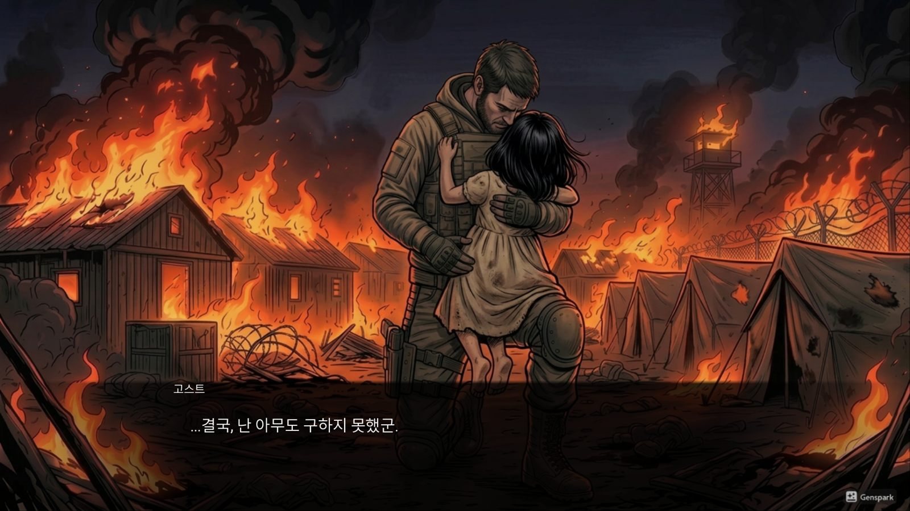
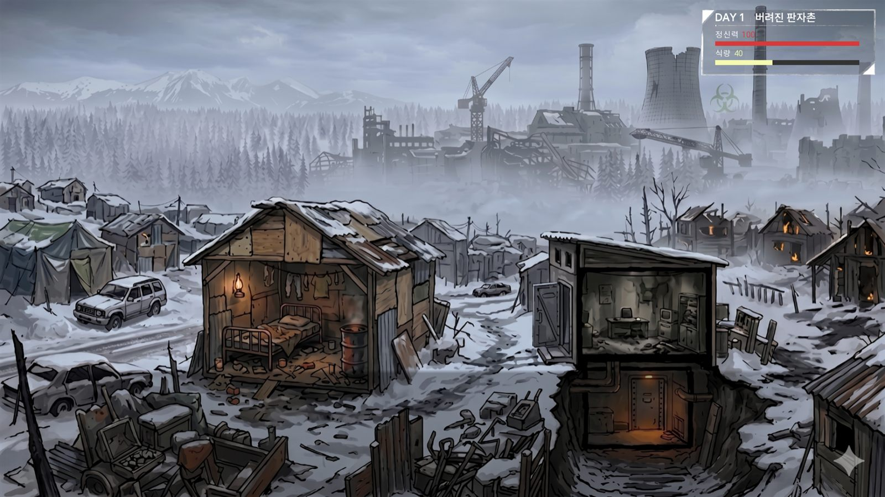
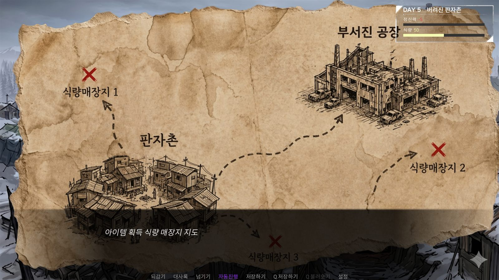
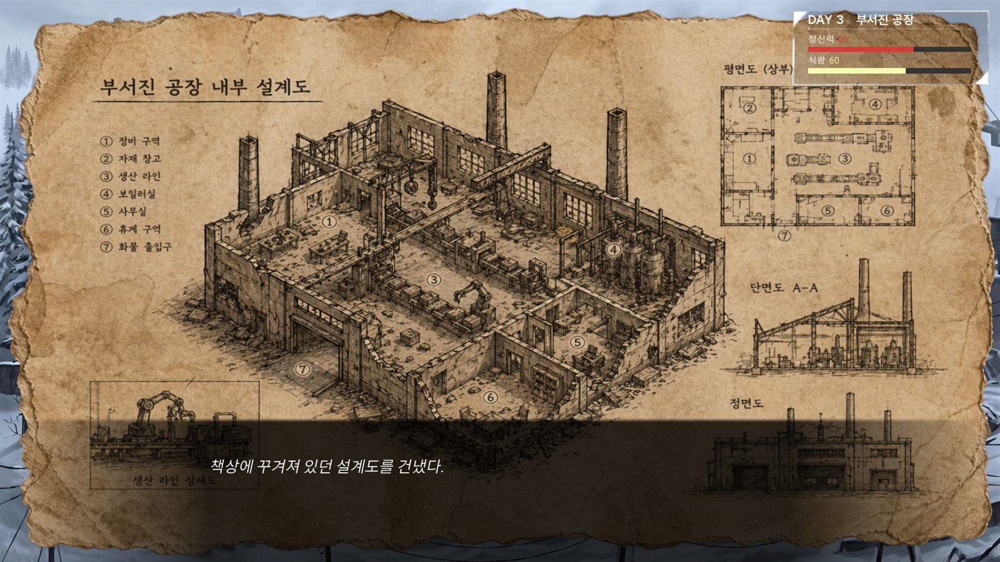
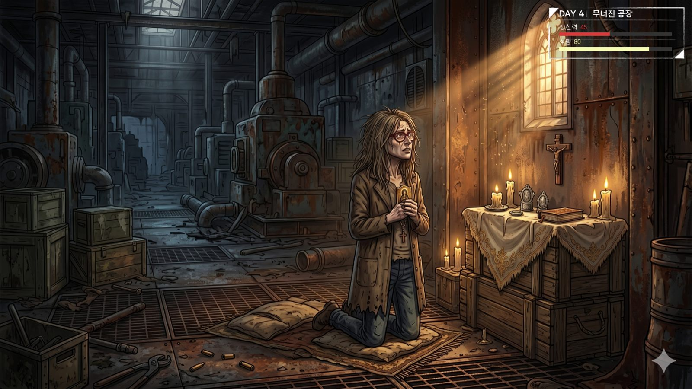
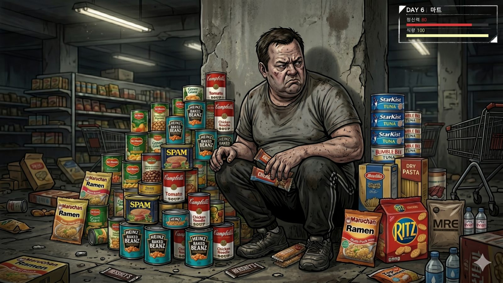
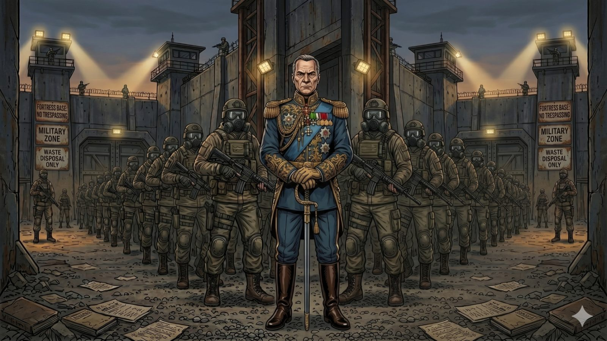
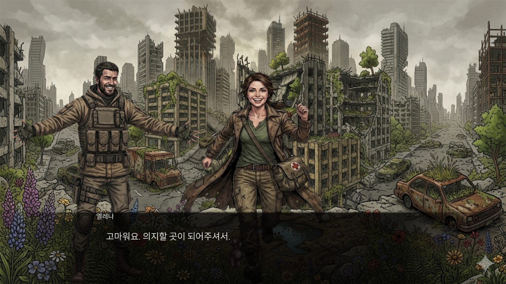
| 선택지 | 식량 | 정신력 | 카르마 | 설계 의도 |
|---|---|---|---|---|
| 도와준다 | −30 | +15 | 0 | 생존 자원을 대가로 인간성을 회복. 진엔딩으로 가는 유일한 경로이자 가장 비싼 선택 |
| 약탈한다 — 일반 인물 | +40 | −5 | +20 | 가장 싸 보이는 선택. 두 번까지는 진엔딩이 유지되어 “이 정도는 괜찮다”는 착각을 허용한다 |
| 살해한다 — 일반 인물 | +70 | −25 | +40 | 단 한 번으로 카르마 상한에 도달. 한계 상황의 탈출구이지만 그 대가로 속죄의 자격을 잃는다 |
| 약탈한다 — 주요 인물 | +40 | −5 | +100 | 한스 · 에이브람 · 엘레나에게 손대는 순간 진엔딩 루트가 즉시 붕괴한다 |
| 살해한다 — 주요 인물 | +70 | −25 | +200 | 가장 큰 즉시 이득이자 서사적으로 가장 무거운 대가. 노말엔딩 확정 |
엘브네아 Elvenea
빛의 신 ‘엘리에르’가 봉인되고 어둠의 화신 ‘카르엘’에 의해 세계가 감정과 기억을 잃은 침묵에 빠진 뒤, 감응 능력을 지닌 유일한 존재가 탑을 정화하며 정령들과 감정을 공명해 나가는 판타지 액션 어드벤처입니다. 저는 전투 · AI · UI 관리 시스템을 C#으로 직접 스크립팅하고, 대화 시스템부터 사운드 연출까지 플레이 경험 전반의 구현을 담당했습니다.
시스템 구현 — Unity C# 스크립팅
기획과 아트가 나뉜 3인 팀에서 저는 게임이 실제로 ‘돌아가게’ 만드는 쪽을 맡았습니다. 전투 · AI · UI 관리 시스템을 C#으로 직접 스크립팅하고, 대화 시스템 구축부터 사운드 · 이펙트 연출과 빌드 안정화까지 플레이 경험 전반의 구현을 책임졌습니다.
- 전투 · AI · UI 관리 시스템을 C#으로 스크립팅해 액션 어드벤처의 기본 루프를 구현
- Pixel Crushers 기반 대화 시스템을 구축해 메인 퀘스트 진행과 연결
- 오디오 · 이펙트 연출과 파티클 시스템 최적화로 연출과 성능의 균형을 조정
- 유니티짱(Unity-chan) 보이스 로컬라이제이션 적용
- 빌드 디버깅 및 안정화 — 졸업전시 출품 빌드를 문제 없이 시연 가능한 상태로 마무리